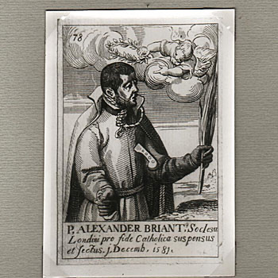

Mučenici iz Engleske i Walesa (10 svetaca)
Svećenik
Sv. Aleksandar Briant
1556. – 1581.
Nakon obraćenja i svećeničke priprave na kontinentu služio je katolicima rodnoga Somerseta. U zatočeništvu je zamolio primanje u Družbu Isusovu, kojoj je pristupio neposredno prije pogubljenja zajedno s Edmundom Campionom.

Izvor slike
- Spomendan
- 1. prosinca
- Zaštitništvo
- Nije navedeno u izvoru
- Životni vijek
- 1556. – 1581.
- Djelovanje
- Misije i evangelizacija · Obraćenje i novi počeci · Progoni i progonstvo · Mučeništvo
- Razdoblje
- 16. stoljeće
- Rođenje — dostupni podaci
- 1556.; dan i mjesec nisu potvrđeni u provjerenom izvoru.
- Mjesto rođenja
- Engleska
- Datum smrti
- 01.12.1581.
- Mjesto smrti/mučeništva
- Tyburn, London, Engleska
- Okolnosti smrti/mučeništva
- Obješen i raščetvoren nakon mučenja zbog katoličkoga svećeništva.
- Uloga
- Svećenik
- Mučenik
- Da
- Ostale oznake
- Novak; Primljen u Družbu tijekom zatočeništva
- Pripadnost
- Isusovac
- Drugi oblici imena
- Alexander Briant · Alexander
Životopis
Sveti Aleksandar Briant bio je engleski isusovački svećenik i mučenik, jedan od Četrdesetorice mučenika Engleske i Walesa. Rodio se 17. kolovoza 1556. u Somersetu, u vrijeme kada je vjernost Katoličkoj Crkvi u Engleskoj postajala sve opasnija.
Mladi Briant pohađao je Hart Hall u Oxfordu, današnji Hertford College, a studij nastavio na Balliol Collegeu. Ondje je bio učenik Roberta Parsonsa. Susreti s Parsonsom i Richardom Holtbyjem pridonijeli su njegovu obraćenju na katoličku vjeru. Nakon sveučilišta napustio je Englesku kako bi se pripravio za svećeništvo u engleskim kolegijima na kontinentu, najprije u Reimsu, a zatim u Douaiju.
Za svećenika je zaređen 29. ožujka 1578. Već u kolovozu sljedeće godine poslan je u englesku misiju. Katolički su svećenici tada djelovali tajno, služeći misu i dijeleći sakramente u privatnim kućama, svjesni da im uhićenje može donijeti optužbu za veleizdaju. Briant se vratio u rodni Somerset i ondje revno služio raspršenim katoličkim zajednicama.
Vlasti su ga uhitile 28. travnja 1581. dok su tragale za Robertom Parsonsom. Najprije je zatvoren u Counter, gdje su od njega pokušali iznuditi podatke, a zatim je odveden u Londonski Tower i mučen. Tijekom zatočeništva napisao je pismo isusovačkim ocima u Engleskoj i zatražio da bude primljen u Družbu Isusovu. Molba mu je prihvaćena, pa je isusovac postao u zatvoru, neposredno prije smrti.
Na sudu u Westminsteru 16. studenoga 1581. izveden je sa šestoricom drugih svećenika. Optužba za veleizdaju temeljila se na njihovu svećeništvu, vezama s Rimom i katoličkom misijskom djelovanju. Briant je osuđen na smrt. U pismu je posvjedočio da tijekom mučenja gotovo nije osjećao bol, ali je konačni sud o tome prepustio Bogu.
Pogubljen je u Tyburnu 1. prosinca 1581., u dobi od dvadeset pet godina, vješanjem, izvlačenjem i četvorenjem. Istoga su dana ubijeni sveti Edmund Campion i sveti Ralph Sherwin. Način pogubljenja bio je namjerno okrutan i trebao je zastrašiti druge katolike, ali je njihova postojanost postala svjedočanstvo vjere zbog koje su prihvatili smrt.
Papa Lav XIII. proglasio je Aleksandra Brianta blaženim 29. prosinca 1886. Papa Pavao VI. kanonizirao ga je 25. listopada 1970. zajedno s ostalim Četrdesetoricom mučenika Engleske i Walesa. Njihov se zajednički spomendan slavi 25. listopada. U Engleskom kolegiju u Rimu čuva se korporal na kojemu je Briantovo ime izvezeno među imenima petorice svećenika.
Aleksandar Briant jasno se razlikuje od brojnih antičkih svetaca istoga imena: nije bio aleksandrijski patrijarh, rimski papa ni mučenik iz Comane, nego engleski isusovac iz 16. stoljeća.
Spomendan svetoga Aleksandra Brianta slavi se 1. prosinca, na dan njegova mučeništva.
Pročitaj više na izvornoj stranici ↗